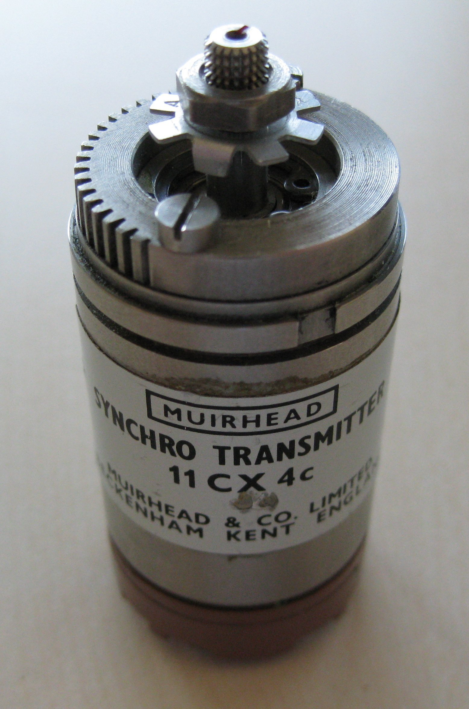

Средства автоматизации и управления
ШД и ИД крутят вал. Следящей системе ещё нужно знать: совпал ли угол с заданием?
Три шага: сравнить углы → получить Δφ → превратить в U. Жмите карточку или блок на схеме
φвх − φн = Δφ → U = Kизм · Δφ
Два применения из учебника. Нажмите карточку
ИР внутри общей схемы следящей системы. Жмите блок
Что делает коэффициент измерения. Крутите рассогласование
Uвых = Kизм · Δφ
Kизм = 1 · Δφ = 30° · U = 30
Жмите карточку: два делителя и разность движков, либо связь обмоток и переменное U
ИР на круговых потенциометрах. Жмите деталь или карточку
конструкция (а) и обозначение на схемах (б). Жмите деталь
Крутите φвх: движки расходятся — между ними есть Uизм. «Догон» ставит приёмник на тот же угол
φвх 115° · φн 40° · движки на разных углах · Uизм есть
Жмите карточку. Равновесие — доли обмоток совпали и Uизм пропало. Мёртвая зона — сектор без проволоки
доли совпали · R1/R2 = R3/R4 · Uизм ≈ 0
Крутите угол или нажмите «Оборот». Движки идут по всему кольцу, и там, где раньше был разрыв, проволока на месте
30° · оба движка на замкнутом кольце · пустого сектора нет
Анализ схемы даёт ту же формулу. Жмите блок
Uизм = Kизм · (φвх − φвых)
Что даёт потенциометрический ИР и чем он «платит». Жмите карточку
Класс точности — допуск с завода. I самый строгий, III последний годный
I — самый строгий допуск · III — последний годный
| Класс | полное R отличается от бирки± (ΔR / Rном) · 100 % | кривизна при повороте± |(ΔR/Δφ)max − Kп| / Kп · 100 % |
|---|---|---|
| I | ± 0.25 % | ± 5 % |
| II | ± 0.5 % | ± 5 % |
| III | ± 1 % | ± 10 % |
Оба допуска сразу. Вышел за III — брак, на переделку.
Для ИР любого типа. Жмите часть
δир = √(δдат² + δпр²)
Угол вала уходит по трём проводам. Дальше — догон вала или Uизм

питание · φ1 = 0° · φ2 = 0° · токи ≈ 0
Крутите угол. Толстая черта — доля поля, которую поймал приёмник
θ = 0° · поле поперёк приёмника · волна на нуле
|θ| = arcsin(доля) · вместе с сетью — плюс, перевёрнута — минус
Итог сельсинного ИР. Крутите θ · жмите карточку
Uизм / Um = sin 30° = 0.50 · фаза 0°
Ротор замкнули на резистор. Пошёл ток и свой магнит. Зелёная стрелка гасит поле датчика
ток создал Φ₂ · кусок против поля датчика Φ₂·sin φ
Приёмник стоит, датчик крутится. Синяя — ток сети, пунктир — размах от поворота
UΔ = Um·sin(ωвр·t)·sin(ω₀·t) · период огибающей 2π/ωвр
ИР: потенциометры, сельсины, формула, реакция нагрузки и динамическая погрешность.